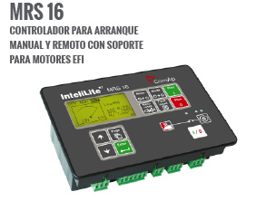
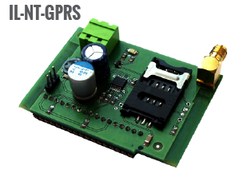

Los controladores InteliATSNT son diseñados para monitorear la red comercial (1 o 3 fases) por sobre y bajo voltaje, sobre y baja frecuencia, y desbalance de voltaje. En caso de alguna falla de la red comercial enviará una señal de arranque remoto al grupo electrógeno y realizará la transferencia operando con seguridad ambos contactores del generador y la red comercial. El generador requerirá un controlador capaz de recibir señales de arranque remoto (tipo ComAp InteliLiteNT MRS).
Ventajas
- Transferencia entre red comercial y grupo electrógeno.
- Transición abierta.
- Transición en fase (sincronización pasiva).
- Transición cerrada (sincronización pasiva, paralelo de corto tiempo).
- Configuración en sitio (por pantalla).
- Menos componentes y cableado.
- Menos ingeniería y programación.
- Monitoreo remoto, ofreciendo, menores costos de servicio técnico

La gama de controladores InteliLiteNT ofrece una amplia variedad de soluciones de control para grupos electrógenos individuales en aplicaciones de emergencia o manuales. Basados en la arquitectura InteliLite ya probada en campo, ésta familia de controladores cumple todos los requisitos desde el más simple al más complejo, tanto para aplicaciones AMF como para MRS, con modelos específicos que proporcionan control vía módem e Internet, fácil configuración, monitoreo y protección completa del grupo electrógeno.
Ventajas
- Menos cableado y componentes.
- Menos ingeniería y programación.
- Opción adicional de 8 entradas y salidas binarias.
- Opción de comunicación por Internet con control y monitoreo vía páginas web.
- Soporte para Internet inalámbrico.
- Opción de envío de emails y mensajes SMS.
- Comunicación directa con motores EFl.
Controladores GECON proporcionan integral protección del generador y control para el solo o múltiples grupos electrógenos basados en campo probados InteliGenNT y InteliSysNT plataformas.
Beneficios
- Excelente capacidad de configuración permite a los usuario es personalizar a las necesidades de su aplicación.
- Opción para leer información del ECU.
- Gestión de alimentación a través de diversos motores de diferentes productores.
- Opcional: establece la frecuencia de paso de 0,1 Hz.
- Elección de opciones de comunicación a distancia asegura una fácil supervisión y mantenimiento.
- Construido en funciones de PLC elimina la necesidad de un controlador PLC externo.
- Precio perfecto relación / calidad.
- Gen-Set registro de rendimiento para facilitar el problema de rastreo.
- Ejecución de aplicaciones SPI y SPTM sin dongle.
-
Características avanzadas de protección, comunicaciones remotas y el registro de datos hacen al InteliPro una protección ideal para su inversión del grupo conectado a la utilización.
Beneficios
- Cumple con las normas G59/2, G10, IEC 60255, IEEE1547
, VDE-V-0126-1-1. - Posibilidad de habilitar las funciones apropiadas requeridas
por la red. - Histórico detallado que registra la naturaleza de
perturbaciones y cortes en la red.
- Cumple con las normas G59/2, G10, IEC 60255, IEEE1547
-

MainsPro es esencial para evitar el suministro de la electricidad en una red aislada, dando lugar a posibles daños al equipo o problemas de seguridad.
Beneficios
- Cumple con los requerimientos europeos (G59/2,
PPDS/P4,EN 60255). - Alimentación universal CA y CC.
- Combinación única del Salto de Vector y ROCOF en una
unidad. - Opcional: establece la frecuencia de paso de 0,1 Hz.
Tensión positiva y negativa para detección sensible
de la asimetría. - Funcionamiento remoto mediante interruptores binarios
y salidas a relé. - Indicación de las condiciones de la instalación durante
los disparos. - Flexibilidad de aplicaciones (1 o 3 fases, 120/230/400 Vac).
- Cumple con los requerimientos europeos (G59/2,
-
- Controlador de motor Bombas y Compresores.
- Arranque / parada automática o manual del motor.
- Botón programable de encendido / apagado del panel.
- Apoyo de los motores de la Unidad de Control
Electrónico (ECU) - J1939 o Cummins Modbus. - Indicador analógico salidas (VDO, DATCON y otros)
operador amigable. - Control de velocidad del motor Smooth.
- 7 entradas binarias configurables.
- 7 salidas binarias configurables.
- 7 entradas analógicas configurables (3 resistivas,
4 de voltaje) + 2 entradas de tensión no configurables. - Protecciones seleccionables de alarma / apagado.
- USB, RS485 / RS232 / Modem / comunicación Modbus.
- SMS automático de alarma.
- Certificaciones EN, UL.
- Controlador de motor Bombas y Compresores.
- Arranque / parada automática y control de velocidad para
motores de velocidad variable. - Ajuste manual de la velocidad del motor por velocidad Trim,
paneles botones arriba / abajo o de forma remota con sólo
interruptor. - Control automático del motor RPM por ejemplo, bucle de
presión. - Interfaz analógica para motores mecánicos.
- Exceso de velocidad, presión de aceite, temperatura del
refrigerante, nivel de combustible, y otras protecciones
ajustables. - 10 artículos registro historia gráfica.
- Configuración del panel o herramienta para PC DriveEdit
sobre la interfaz USB. - 4 entradas binarias.
- 8 entradas analógicas - 3x VDO, 3x 20 mA, 1x ohmio.
- 2 salidas analógicas 5 VDC.
- 3 LED del panel.
- Fuente de alimentación 8 - 36VDC.
- Protección contra polvo y agua IP 65 (panel frontal).
-
Descripción de IL-NT-S USB
- Módulo de servicio USB.
- Módulo de comunicación fácilmente extraíble plug-in con
interfaz de dispositivo USB. Para InteliLite NT, NT
InteliCompact, controladores InteliDrive Lite y sus clones.
Descripción de IB- LITE
- Internet / módulo Ethernet incluyendo Servidor Web.
- Módulo PLUG-IN de comunicación para InteliATS NT,
InteliLite NT, InteliCompact NT y InteliDrive
Lite controladores y sus clones. - Interfaz de Ethernet 10/100 MBit en conector RJ45.
- Interfaz web para monitoreo básico y el ajuste del
controlador. - ComAp / protocolo TCP para acceso remoto desde LiteEdit
o InteliMonitor. - Protocolo Modbus / TCP para la integración del controlador
en la construcción de sistemas de gestión u otros efectos
de control remoto. - Protocolo SMTP con autenticación para el envío de correos
electrónicos activos. - Configuración y actualización de firmware basado en la Web
del módulo.
-
Descripción de IL-NTT-RS232-485
- Módulo de puerto dual con interfaces RS232 y RS485 en
canales COM independientes. El RS232 está conectado a
COM1 y COM2 RS485. - Compatible con InteliLite NT, InteliCompact NT
y InteliDrive Lite.
Descripción de IL-NTT-RS232
- Tablero de extensión que contiene el puerto RS232 para
InteliLite NT, InteliCompact NT y controladores
InteliDrive Lite
- Módulo de puerto dual con interfaces RS232 y RS485 en
-


Descripción de IL-NT-GPRS
- Módulo Plug-in de comunicación para controladores
InteliLite NT, InteliCompact NT y InteliDrive Lite y sus clones. - La función de módem GSM para conexión de acceso
telefónico. - Soporte GPRS para la conexión inalámbrica a Internet.
- El apoyo del sistema WebSupervisor para la monitorización
basada en web y control de uno o varios controladores
a la vez.
Descripción de BRIDGE-NT
- Módulo de comunicación con conexión celular / Ethernet.
- Conexión a Internet para uno o más controladores ComAp,
ya sea por cable Ethernet o mediante construido en módem
3.75G celular. - Módem GPRS / UMTS de alta velocidad inalámbrico
incorporado. - Soporta todos los sistemas de paquetes de datos
celulares de GPRS a HSPA (2.5G de 3.75G) - Soporte multibanda completo - módem trabaja a nivel
mundial. - Conexión por cable Ethernet para la conexión LAN local.
- Módulo individual puede ser utilizado para varios controladores
en el mismo sitio (conectado a través de CAN o RS485). - MODBUS / TCP, SNMP soporte de protocolo - conexión
directa con la gestión y otros sistemas de construcción.
- Módulo Plug-in de comunicación para controladores